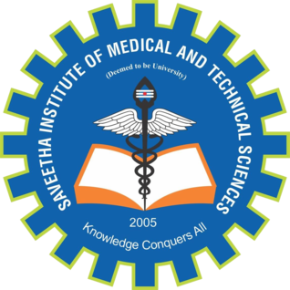

|  | SAVEETHA ENGINEERING COLLEGE |
|---|
Saveetha Institutions, located in Chennai, India, is a renowned educational institution known for its commitment to academic excellence, innovation, and holistic development. Founded with a vision to nurture future leaders, Saveetha offers a diverse range of undergraduate, postgraduate, and doctoral programs across fields such as engineering, medicine, dental sciences, management, law, and arts & sciences. With state-of-the-art infrastructure, modern facilities, and a vibrant campus life, Saveetha ensures a well-rounded education that prepares students to excel in their chosen professions. The institution's strong focus on research, industry collaborations, and community engagement further enriches the learning experience, making Saveetha a preferred destination for students seeking quality education and a fulfilling academic journey.